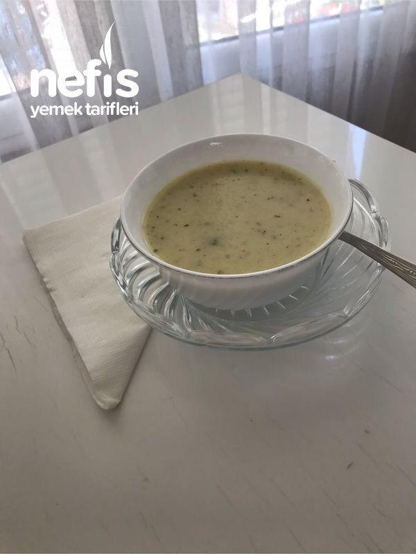
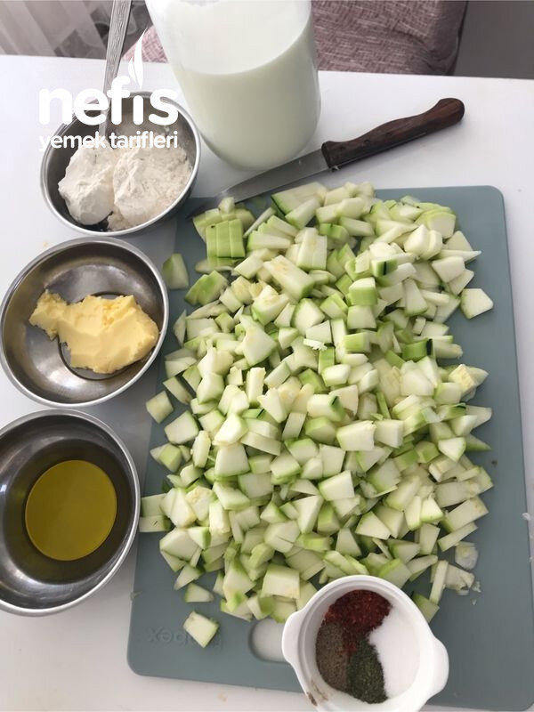
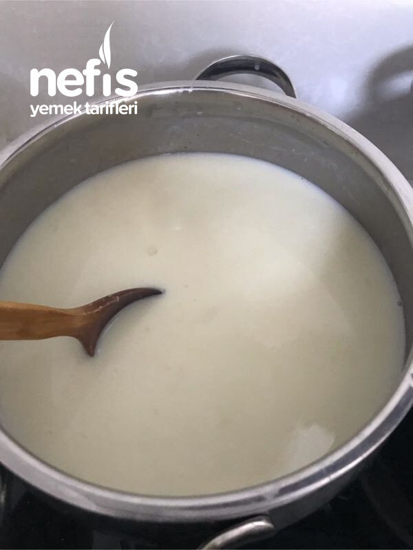
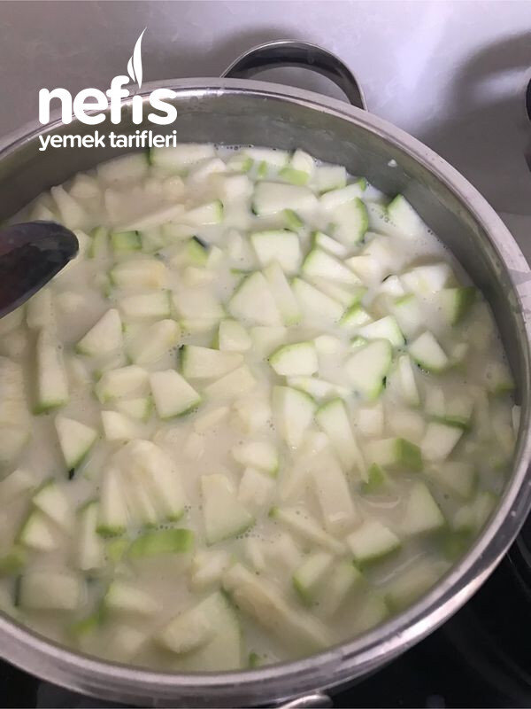
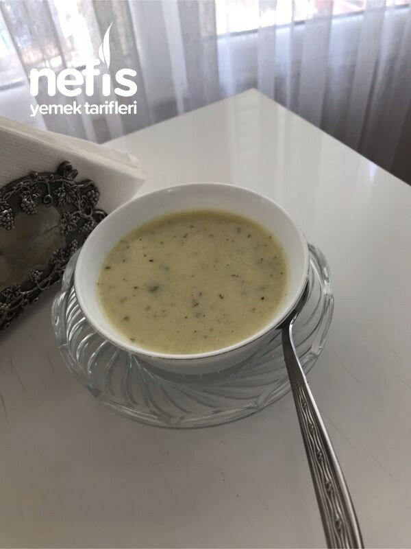
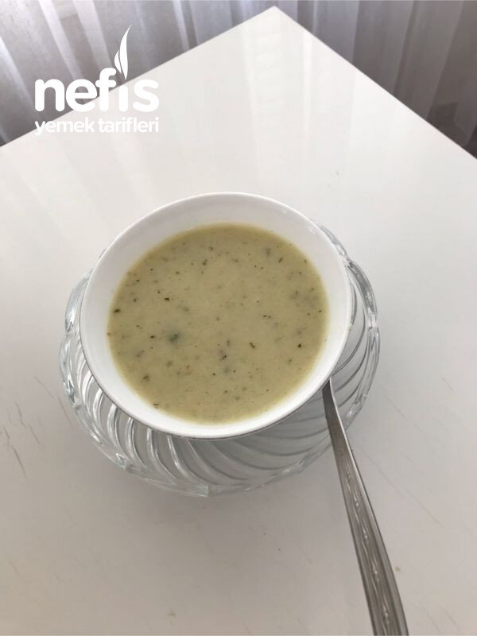

Nefis Kabak Çorbası
2021-07-04
← Tüm tarifler

🍽️ 8-10 kişilik
⏱️ Hazırlık: 15 dk
🔥 Pişirme: 25 dk
🏷️ Çorba Tarifleri
Malzemeler
3 adet kabak
3 kaşık un
4,5 su bardağı süt
6 su bardağı su
2 kaşık tereyağı
Yarım fincan zeytinyağı
Nane
Pul biber
Karabiber
Dereotu
Tuz
Hazırlanışı
Tereyağı ve zeytinyağı tencereye alıyoruz. Yağımız ısınınca unu ilave edip kokusu çıkana kadar karıştırarak kavuruyoruz.
Sütü ilave ederek hızlıca karıştırarak kaynama noktasına kadar getiriyoruz. Suyu da ilave edip dip tutmaması için arada karıştırıyoruz.
Küp doğradığımız kabakları ilave ediyoruz. Arada karıştırıyoruz. Kabaklar yumuşayınca blenderden geçiriyoruz.
Nane, pul biber, karabiber ve bir miktar dereotu ekliyoruz. Tuzunu ve kıvamını kontrol ediyoruz.
Çok koyu kıvamlı olursa biraz su veya süt ile kıvamını ayarlıyoruz. Nefis çorbamız hazır. Afiyet olsun 😊.
Fotoğraflar




